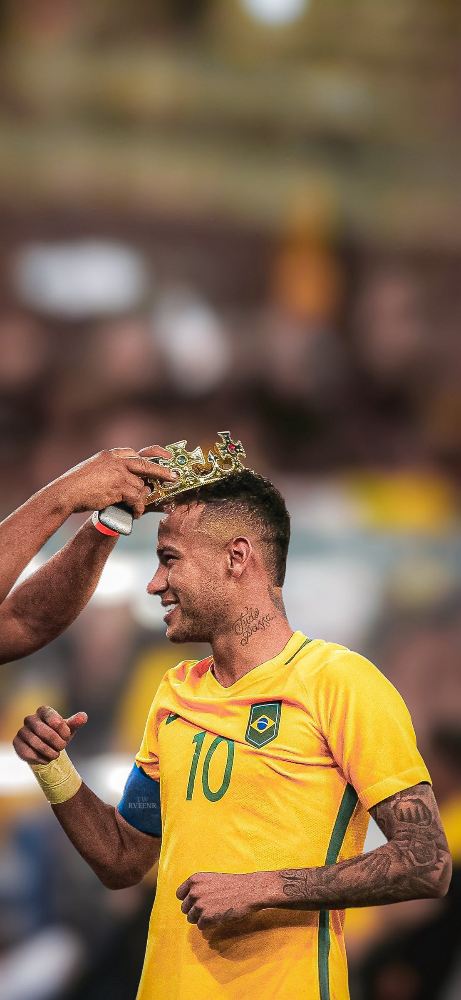
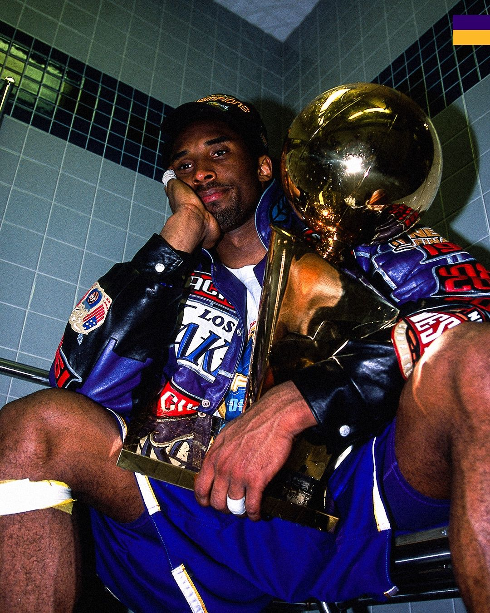
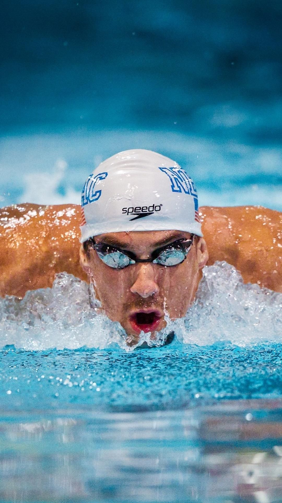
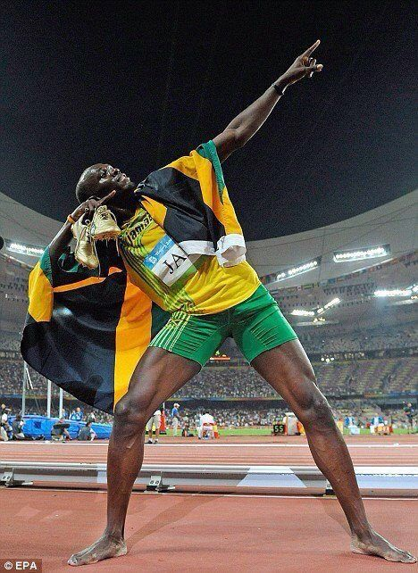

Neymar sempre demonstrou que o futebol era mais do que só um jogo pra ele. Desde novo, jogar bola era onde ele se sempre onde se sentia feliz, realmente sendo ele mesmo. O jeito dele de jogar, a conexão com a torcida e a emoção de cada partida mostram como o futebol faz parte da identidade dele.
Kobe Bryant encontrou no basquete um esporte onde podia desafiar a si mesmo todos os dias. Conhecido pela sua disciplina e mentalidade forte, ele treinava constantemente para sempre evoluir e ir além dos próprios limites. O basquete se tornou parte da identidade dele pela intensidade, foco e dedicação que colocava em cada partida.


Michael Phelps encontrou na natação um esporte que exigia muito mais do que força física. Desde cedo, percebeu que evoluir dependia de muita disciplina, foco e dedicação diária. Os treinos intensos e a constância fizeram ele desenvolver uma mentalidade muito forte, sempre buscando melhorar a si mesmo. Com toda essa dedicação, Michael Phelps se tornou um dos maiores atletas da história do mundo esportivo.
Usain Bolt encontrou na corrida uma forma de mostrar sua confiança, velocidade e personalidade. Mesmo com toda o dom que demonstrava nas pistas, ele treinava intensamente para continuar evoluindo e manter seu nível. A corrida se tornou parte da identidade dele pela sensação de liberdade, superação e adrenalina que o esporte traz. Com seu jeito descontraído e sua dedicação, Bolt acabou se tornando um dos maiores nomes da história do atletismo.
